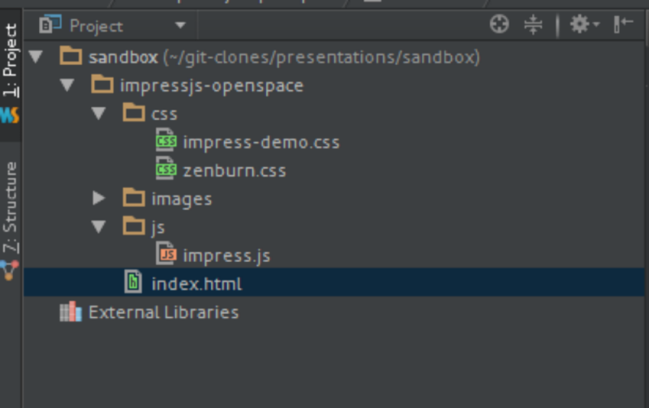

first we need to know how to present this
so we need a medium to push it out
ever seen a
github.io
page and wondered how they did it?
... follow me

Create a new github.io repository

.. select Automatic Page generation from settings

.. now update the wiki markup

.. apply a style

.. release it http://suggitpe.github.io/
... so back to impress
First: create a new repo
Then: create the directories and files as below

hint: use the source, Luke!
Now we need to set up index.html
<!DOCTYPE html>
<html lang="en">
<head>
<!-- put stylesheets, fonts, title etc here -->
</head>
<body>
<div id="impress">
<!-- magic happens here -->
</div>
<!-- initialise impress -->
<script src="js/impress.js"></script>
<script>impress().init();</script>
</body>
</html>
high level structure
<head>
<meta charset="utf-8"/>
<meta name="viewport" content="width=1024"/>
<title>impress.js openspace</title>
<link href='http://fonts.googleapis.com/css
?family=Roboto+Slab:400,700,300,100'
rel='stylesheet' type='text/css'>
<link href='http://fonts.googleapis.com/css
?family=News+Cycle'
rel='stylesheet' type='text/css'>
<link href="css/impress-demo.css" rel="stylesheet"/>
<link href="css/zenburn.css" rel="stylesheet"/>
</head>
an example header
Now for the content
Imagine that this is just one big canvas
we are at x=0; y=0
The position of each slide is defined in the div metadata, the last one is at:
<div data-x="0" data-y="0">
moving up... this one is at:
<div data-x="0" data-y="-1000">
we are at x=0; y=-1000
Just moved left across the canvas
<div data-x="-1000" data-y="-1000">
we are at x=-1000; y=-1000
And now back to the original position
<div data-x="0" data-y="0">
we are at x=0; y=0
We all know about the third dimension right?
<div data-x="0" data-y="0" data-z="-1000">
we are at x=0; y=0; z="-1000"
The 3D canvas is huge ...
<div data-x="0" data-y="0" data-z="-10000">
we are at x=0; y=0; z="-10000"
But we can always recenter
<div data-x="0" data-y="0" data-z="0">
we are at x=0; y=0; z=0
This is how to make your audience seasick
<div data-x="0" data-y="0" data-z="0" data-rotate-x="720" data-rotate-y="0">
we are at x=0; y=0; z=0; rotate-x=720; rotate-y=0
This is how to make your audience seasick
<div data-x="0" data-y="0" data-z="0" data-rotate-x="720" data-rotate-y="720">
we are at x=0; y=0; z=0; rotate-x=720; rotate-y=720
But we can always recenter ...
we are at x=0; y=0; z=0
If we combine them we can do some fancy things like a circle
we are at x=0; y=0; z=-10000; rotate=0
If we combine them we can do some fancy things like a circle
we are at x=-1000; y=-1000; z=-10000; rotate=-90
If we combine them we can do some fancy things like a circle
we are at x=-2000; y=0; z=-10000; rotate=-180
If we combine them we can do some fancy things like a circle
we are at x=-1000; y=1000; z=-10000; rotate=-270
And back to the middle of the circle
we are at x=-1000; y=0; z=-10000; rotate=-360
impress.js
... impressed ?